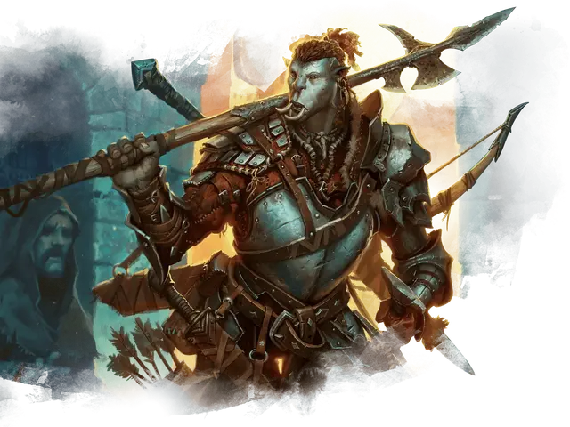

Военачальник
Warlord
Средний Гуманоид (Любая раса), любое мировоззрение

Класс Доспеха 18 (латы)
Хиты 229 (27к8 + 108)
Скорость 30 футов
| мод | спас | ||
|---|---|---|---|
| СИЛ | 20 | +5 | +9 |
| ЛОВ | 16 | +3 | +7 |
| ТЕЛ | 18 | +4 | +8 |
| мод | спас | ||
|---|---|---|---|
| ИНТ | 12 | +1 | +1 |
| МДР | 12 | +1 | +1 |
| ХАР | 18 | +4 | +4 |
Навыки Атлетика +9, Восприятие +5, Запугивание +8, Убеждение +8
Чувства пассивное Восприятие 15
Языки любые два языка
Опасность 12 (8400 опыта)
Бонус мастерства +4
Среда обитания Город
Особенности
Упорный (3/день). . Военачальник может перебросить проваленный спасбросок. Он должен использовать новый результат.
Уцелевший. . Военачальник восстанавливает 10 хитов в начале своего хода, если у него не меньше 1 хита и не больше чем половина максимального количества хитов.
Действия
Мультиатака. Военачальник совершает две атаки оружием.
Двуручный меч. Рукопашная атака оружием: +9 к попаданию, досягаемость 5 футов, одна цель. Попадание: Рубящий урон 12 (2к6 + 5).
Короткий лук. Дальнобойная атака оружием: +7 к попаданию, дистанция 80/320 футов, одна цель. Попадание: Колющий урон 6 (1к6 + 3).
Легендарные действия
Военачальник может предпринять 3 легендарных действия, выбрав из вариантов ниже. Можно использовать только одно легендарное действие за один раз и только в конце хода другого существа. Военачальник восстанавливает потраченные легендарные действия в начале своего хода.
Атака оружием. . Военачальник совершает атаку оружием.
Приказ союзникам. Военачальник выбирает одного союзника в пределах 30 футов от него, которого он может видеть. Если цель может видеть и слышать военачальника, то может сделать одну атаку оружием реакцией, получив преимущество на бросок этой атаки.
Испугать врага (Стоимость – 2 действия). Военачальник выбирает одного врага в радиусе 30 футов от него, которого может видеть. Если цель может слышать и видеть военачальника, то должна преуспеть на спасброске Мудрости Сл 16 или стать напуганной до конца следующего хода военачальника.
Описание
Военачальники – легендарные полевые командиры, чьи имена произносят с трепетом. После череды решительных побед, военачальник может с легкостью взять на себя роль монарха или генерала и привлечь последователей, готовых умереть за его или её знамя.